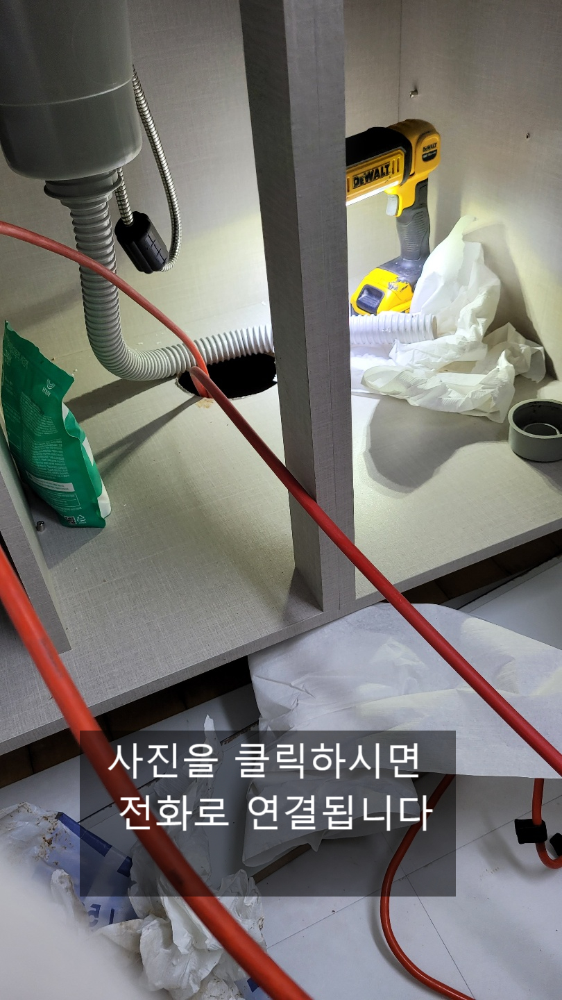
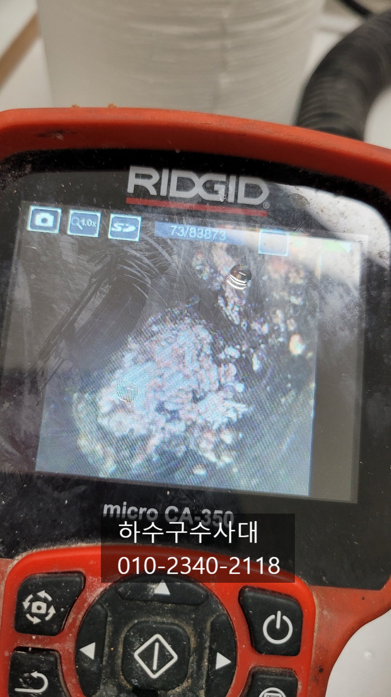
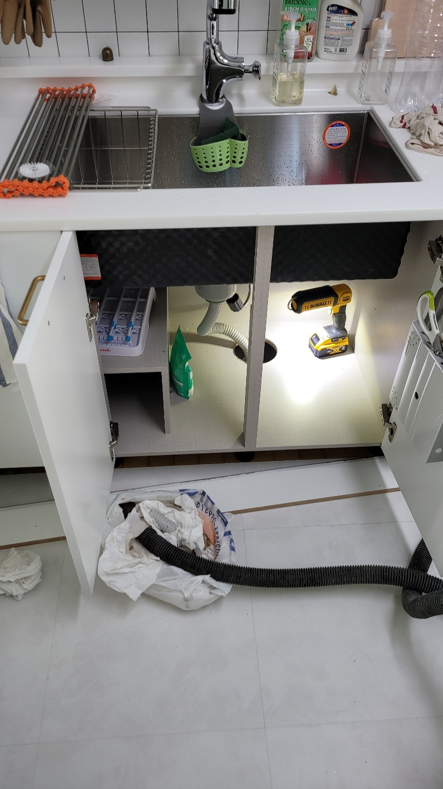
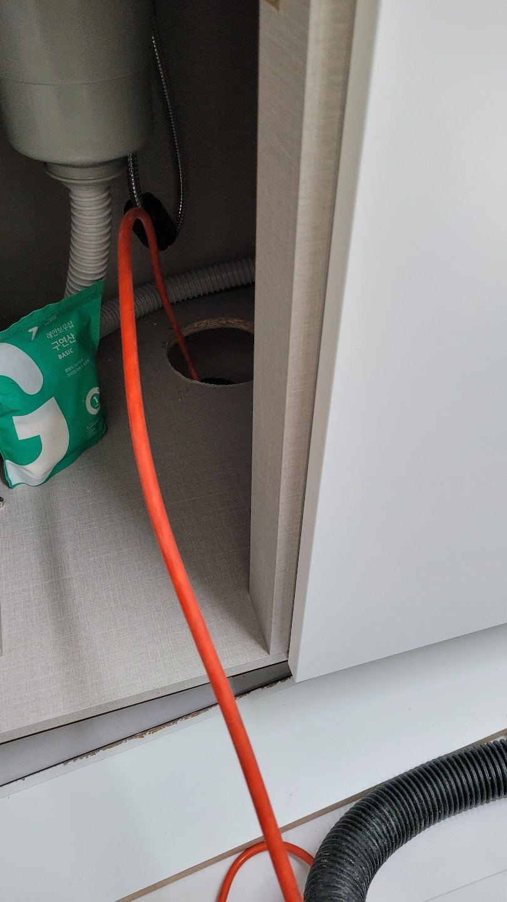
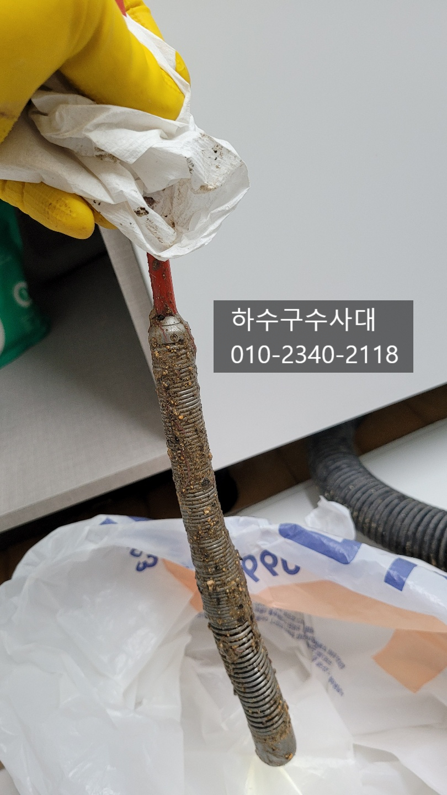
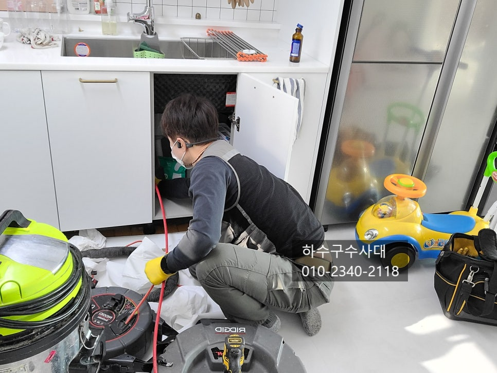
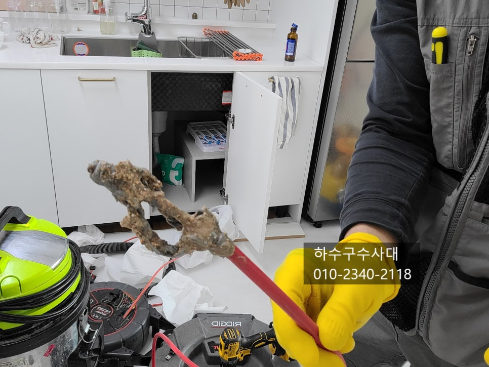

🏠 장안구싱크대막힘 장안구설비업체
용인 싱크대막힘 전문 시공 후기

📋 작업 개요
- 위치: 용인
- 서비스 유형: 싱크대막힘, 하수구막힘, 배관막힘, 누수수리, 역류해결, 설비공사
- 작업 일시: 2021. 12. 8. 13:49
- 업체명: 하수구수사대 (010-5615-2118)
🔍 문제 상황
장안구싱크대막힘 장안구설비업체
안녕하세요
"하수구수사대"입니다.
오늘은 아파트 내부 리모델링한 곳에서 #싱크대하수구 가
막혔다는 연락을 받고 출동하였는데요
종종 리모델링하고 난후 싱크대를 새로 설치하고
물을 받아서 내리는 과정에서 물이 역류하는
증상이 나타납니다.
전에는 잘썼는데 리모델링하고 난후 역류를 하니
공사하면서 배관에 이물질이 들어 갔다고 생각할수도
있는데요 통상적으로 공사를 할때는 싱크대하수구 배관을
막고 공사를 하기 때문에 이물질이 들어가는 일이 거의 없습니다.
막히는 원인은 바로 배관안에 있는 기름덩어리 인데요
공사기간동안 물을 쓰지 않다보니 기름이
말라서 일부분이 떨어져 막히는 원인이 대부분입니다.
배관에는 전에부터 기름덩어리가 붙어있었던것이죠.

🔎 원인 분석
💡 전문가 진단: 하수구수사대010-2340-2118
내시경카메라로 배관을 보니 기름덩어리가 상당히 많이 보입니다.
배관에 기름이 쌓이고 응고가 되는 이유는
오랜기간 사용한부분도 있고 구배가 좋지않아
물이고여있어 기름이 오래 축척되면 조금씩 붙어
기름덩어리가 됩니다.
물을 충분히 흘려보내고 한달에 한번씩 펑크린같은 배관세정제를
넣어 관리하는 습관이 필요합니다.
내시경카메라를 배관에서 빼보니 기름찌꺼기가 많이
묻어나오고 악취또한 심하게 올라왔습니다.
보이는곳은 리모델링을 했지만 보이지않는 하수구배관은
어떤지 상태를 모르기 때문에 막히게 되면 난감하실수 있는
부분인데요 내부리모델링을 하기전에 싱크대배수구는
한번쯤 점검해보는것이 좋습니다.
마루바닥을 새로 깔았는데 물이 역류하여 마루가
젖어 썩을 수도 있고 밑에 집에 누수염려도있기 때문에
점검을 받아보시길 추천드리는 것입니다^^
장비를 넣어 배관에 붙어있는 기름들을 제거하기

🔧 작업 과정
시작했는데요 배관안에 기름덩어리가 갈려서
큰것은 뽑아내고 작은것을 흘려내보내는 작업입니다.
하수구수사대
010-2340-2118
작업을 하던중 장비가 무언가에 걸려 잘 돌아가지
않아서 석션으로 흡입을 해보았는데요
석션호스도 무언가에 막혀 흡입이 되지 않아
배관입구쪽을 보니 기름덩어기라 입구쪽을
꽉! 막고 있었어요.
크고 딱딱한 기름덩어리를 끄집에
냈는데요 상당한기간 굳어있어 딱딱함정도가
거의 돌 같았습니다^^;;
저희는 자주보지만 고객님들께서는
처음보는 분들이 많기에 조금 놀라시기도 하세요. .
배관안에서 이렇게 많은 기름덩어리가 있을거라고는
상상도 못하셨답니다.
남아있는 기름덩어리도 모두 갈아내고 흘려보내는
작업을 반복하여 주었습니다.
배관에 기름덩어리를 모두제거하고 나면 내시경카메라로
꼼꼼히 확인을 하고 혹시나 모를 이물질이 없는지 확인을
하는것이 좋아요.
간혹 싱크대호스나 이물질등이 막고있는경우도 있거든요.
싱크대호스를 배관깊이 넣었다가 오랜기간뒤에 호스교체를
하는 과정에서 호스가 경화되어 끊어지만 배관에
남게 되는 경우가 종종 있답니다.
항상 작업마무리는 싱크대에 물을 많이 받아서 내리는데요
물을 내리는 과정에서 역류하지는 않는지 또는 연결호스에서


✅ 작업 완료
물이 새어나오지 않는지 꼼꼼하게 확인을 해주는것이 좋습니다.
고객님께서도 내시경카메라로 확인을 하시고
앞으로 신경써서 관리를 해야겠다고 하십니다^^
"하수구수사대"는 하수구전문업체로
최신장비보유와 다년간의 노하우로
여러분의 막힘고민을 해결해 드리고 있으니
언제든지 연락주세요^^




⚠️ 베란다 누수 및 방수 관리 방법
- ✅ 비가 많이 올 때 창틀 주변이나 아래층 천장에 얼룩이 생기는지 정기적으로 확인해 보세요.
- ✅ 우수관 주변 실리콘 마감이 들뜨거나 깨진 틈새가 있는지 손상 여부를 수시로 체크하세요.
- ✅ 베란다 바닥 타일의 줄눈(메지)이 소실되면 그 틈으로 물이 침투하여 누수가 유발됩니다.
- ✅ 누수 의심 증상 발견 시 방치하면 아래층 손실이 커지므로 즉시 전문가의 진단을 받으십시오.
💡 핵심 정리
- 확실한 장비 작업(내시경 점검 및 샤프트 스케일링)으로 원인을 뿌리 뽑습니다.
- 작업 후 1년 이내에 동일한 부위 재발 시 100% 무상 A/S 서비스를 보장합니다.
- 서울 · 경기 · 인천 전 지역에 24시간 언제든 긴급 출동할 수 있도록 항시 대기 중입니다.
❓ 자주 묻는 질문 (FAQ)
🚨 용인 싱크대막힘 문제로 고민이신가요?
정확한 원인 진단과 확실한 시공으로 재발 없는 해결을 약속드립니다.
24시간 긴급 출동 | 서울 · 경기 · 인천 전지역 | 1년 내 재발 시 무상 A/S